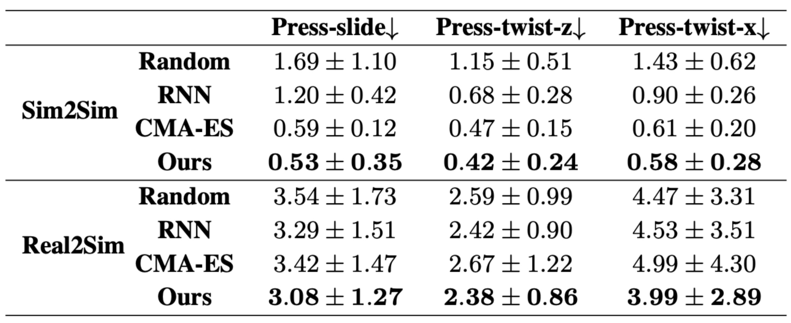
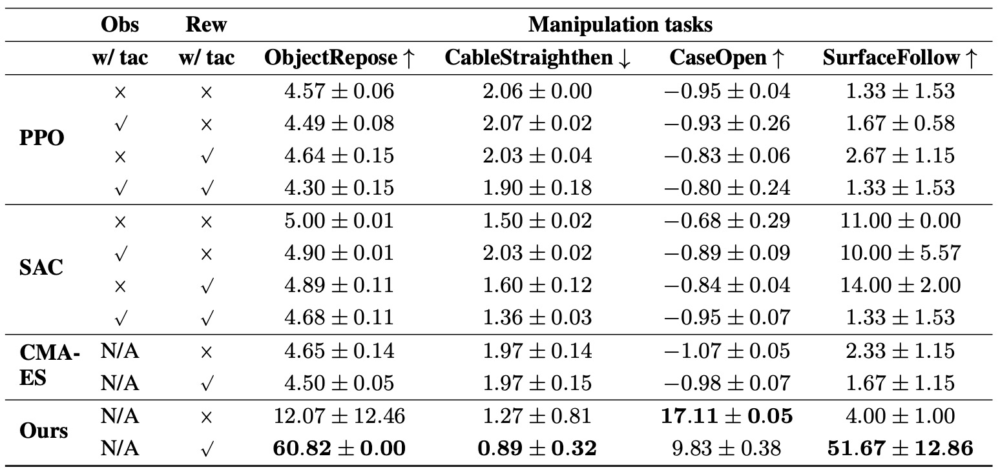

DiffTactile: A Physics-based Differentiable Tactile Simulator for Contact-rich Robotic Manipulation
Surface Following
Box Opening

Cable Manipulation
Object reposing
Abstract
We introduce DiffTactile, a physics-based and fully differentiable tactile simulation system designed to enhance robotic manipulation with dense and physically-accurate tactile feedback. In contrast to prior tactile simulators which primarily focus on manipulating rigid bodies and often rely on simplified approximations to model stress and deformations of materials in contact, DiffTactile emphasizes physics-based contact modeling with high fidelity, supporting simulations of diverse contact modes and interactions with objects possessing a wide range of material properties.
Our system incorporates several key components, including a Finite Element Method (FEM) -based soft body model for simulating the sensing elastomer, a multi-material simulator for modeling diverse object types (such as elastic, plastic, cables) under manipulation, a penalty-based contact model for handling contact dynamics. The differentiable nature of our system facilitates gradient-based optimization for both 1) refining physical properties in simulation using real-world data, hence narrowing the sim-to-real gap, and 2) efficient learning of tactile-assisted grasping and contact-rich manipulation skills. Additionally, we introduce a method to infer the optical response of our tactile sensor to contact using an efficient pixel-based neural module.
We anticipate that DiffTactile will serve as a useful platform for studying contact-rich manipulations, leveraging the benefits of dense tactile feedback and differentiable physics.
Experiments
pixel-wise tactile marker mean squared errors
Metrics of tasks trained by different algorithms
System Identification
We show how we collect real world data and the predicted (yellow) and real (green) markers of three different trajectories.

Real Press-slide

Real Press-twist-x

Real Press-twist-z

Press-slide markers

Press-twist-x markers

Press-twist-z markers
Optical Simulation
We simulate how surface of Gelsight deform when interact with different things. The result is almost the same as real world.
Surface Image Simulation
Sim2real of Contact-rich Manipulation Tasks
We apply trained trajectories of contact-rich manipulation tasks like surface following and box openning in real world.

Surface Following

Box Opening
Sim2real of Grasping Tasks
We apply our trained adaptive grasping policy in real world. We compare the result to forceful grasp and light grasp.

Forceful grasp

Light grasp

Adaptive policy
RL & CMA-ES Trained Results
We visualize trained results of RL algorithms(PPO and SAC) and CME-ES here to show their failure modes.
Surface Following (PPO)
Surface Following (SAC)
Surface Following (CMA-ES)
Box Opening (PPO)
Box Opening (SAC)
Box Opening (CMA-ES)

Cable Manipulation (PPO)

Cable Manipulation (SAC)

Cable Manipulation (CMA-ES)
Object reposing (PPO)
Object reposing (SAC)
Object reposing (CMA-ES)